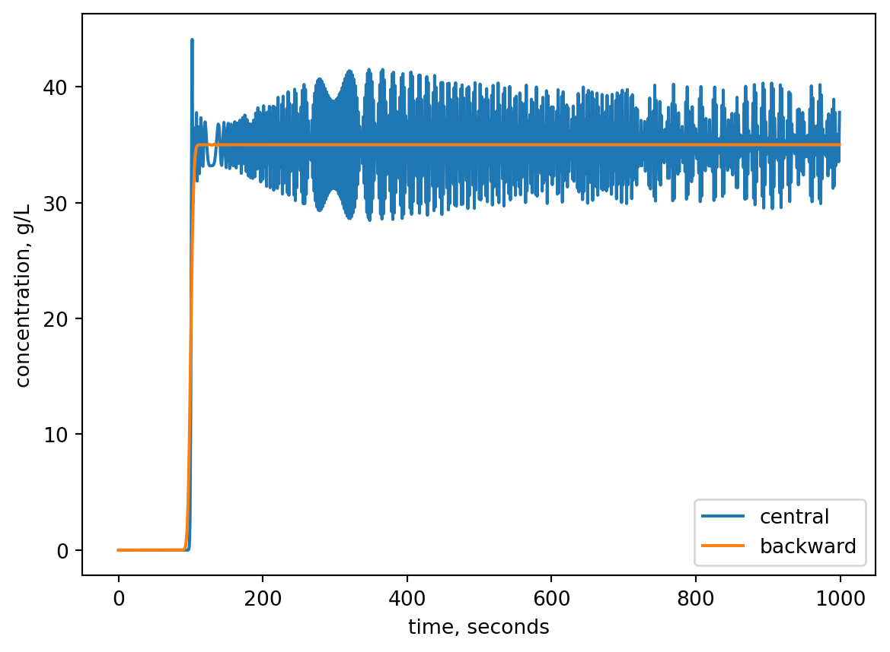
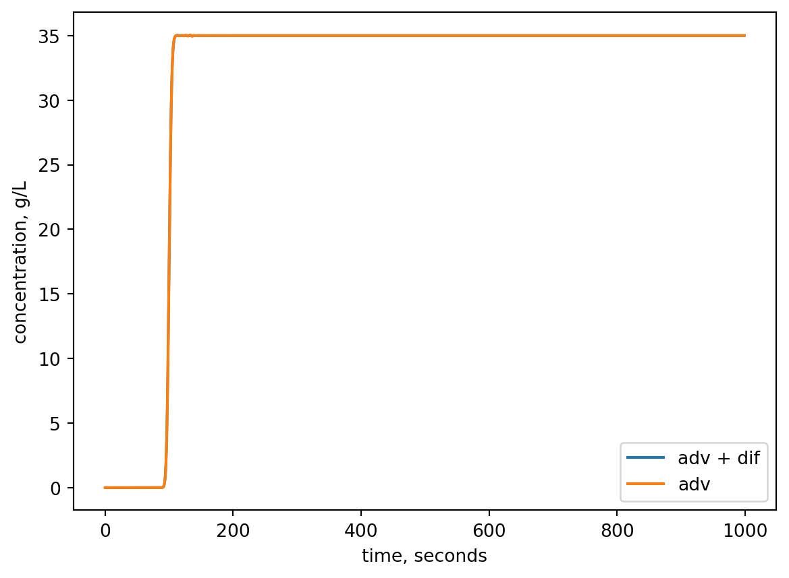
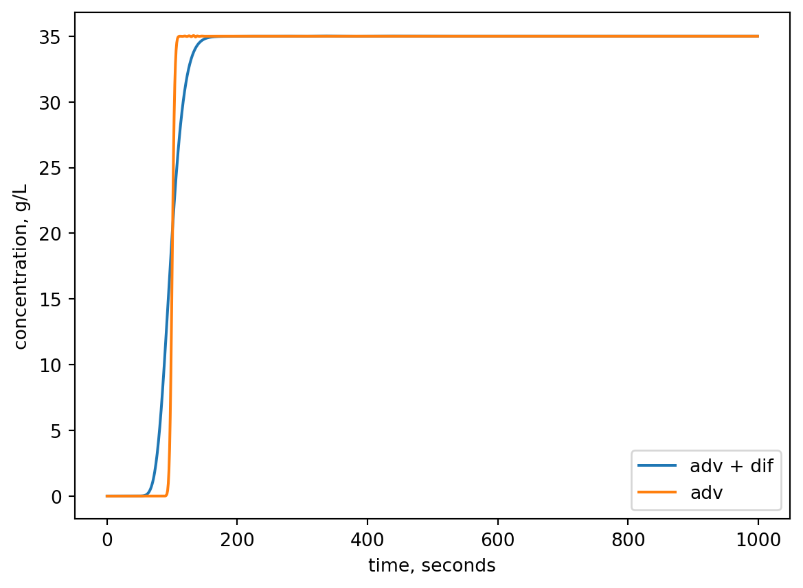

Try to identify if any boundary or initial conditions are used and where in the code these are implemented?
Solution: When making dcdt inside rates, the change is 0 at both boundaries. The for loop is not doing anything to the boundaries (see range from 1 to and exclusive N), so dcdt at boundries remains 0. This implies that the initial condition at the boundaries will also not change. Hence we have implicitly enforced Dirichlet boundary conditions, with 21% at the left and 0% on the right side of the pipe.
We now change the problem to a pipe with running saltwater in it. So instead of modelling the oxygen concentration it is now the salt concentration. We apply a flow of saltwater at a velocity of 0.1 m/s. The pipe is 10 m long and the saltwater has a concentration of 35 g/L at the inlet. The diffusion coefficient of salt in water is 1.5e-9 m^2/s.The pipe is initially filled with drinking water.
Implement code to model the salt concentration - remove diffusion to start with and use only advection. Use two methods for descretization in the interior points: central difference and backward difference. Then pay attention to how you will handle the boundaries. Compare the results. Hint: for comparison you could plot concentration of salt at the right boundary over time.
2A Solution: We change the code by removing the diffusion term and adding advection instead. Also change the constants for the problem.
import numpy as npfrom scipy.integrate import solve_ivpimport matplotlib.pyplot as pltL =10# new length of pipe, mv =0.1# velocity of water, m/sdx =0.01# step size, mx_grid = np.arange(0, L + dx, dx)# first lets try central difference for advection# and make a dedicated function for that version.def rates_central(t, c, x_grid, dx): dcdt = np.zeros(len(x_grid)) N =len(x_grid) -1# We can only have 1 boundary condtion, which is the left boundary# this means we have to remove the right boundary condition, which # was a dirichlet before. So we have to rewrite the dcdt[-1], which # was just set to 0 above and is now incorrect. # We discretize the advection term with a backward difference at the right boundary, which is a first order derivative.We could not use central difference here at the boundary, because that would involve a ghost point that we cannot substitute with a boundary condition. So we use backward difference instead. dcdt[-1] =-v * (c[-1] - c[-2])/dx# The boundary to the left is still a Dirchlet and # is handled with the dcdt = np.zeros(len(x_grid)) code already. # now looping over the interior nodesfor i inrange(1, N):# central difference discretization of the first order derivative (advection is a first order derivative) dcdt[i] =- v * (c[i+1] - c[i-1]) / (2*dx)return dcdt# We also make a dedicated function for backward difference for advectiondef rates_backward(t, c, x_grid, dx): dcdt = np.zeros(len(x_grid)) N =len(x_grid) -1# Now we don't need to take the end boundary out of the for loop# because the for loop is also backward difference. We simply extend the range in the for loop to N+1 and change the code to backward differencefor i inrange(1, N+1): dcdt[i] =- v * (c[i] - c[i-1]) / (dx)return dcdt# simulation parameters: tmax =1000# secondsc0 = np.zeros(len(x_grid)) # because we have demi-water to start with (no salt in water)c0[0] =35# g/L, except at left boundary we have the salt water.# make two separate solver calls using the central and backward rates functions. sol_central = solve_ivp(rates_central, t_span = [0, tmax], y0 = c0, method ="LSODA", t_eval = np.arange(0, tmax, 1), args = (x_grid, dx))sol_backward = solve_ivp(rates_backward, t_span = [0, tmax], y0 = c0, method ="LSODA", t_eval = np.arange(0, tmax, 1), args = (x_grid, dx))# Lets plot the concentration of salt at the right end of the pipe over time and for both descretization methodsplt.plot(sol_central.t, sol_central.y[-1,:], label ="central")plt.plot(sol_backward.t, sol_backward.y[-1,:], label ="backward")plt.xlabel('time, seconds')plt.ylabel('concentration, g/L')plt.legend()plt.show()# Here it is clear that the central difference results in unstable solution!

Now include diffusion in your model also. Use appropriate descretization methods and compare the results with the previous model where you had only advection. What do you see - and is it as expected?
2B Solution: We need to add diffusion term back now.
import numpy as npfrom scipy.integrate import solve_ivpimport matplotlib.pyplot as pltL =10# length of pipe, mD =1.5*10**-9# m2/sv =0.1# m/sdx =0.01# mx_grid = np.arange(0, L + dx, dx)def rates(t, c, x_grid, dx): dcdt = np.zeros(len(x_grid)) N =len(x_grid) -1# we now need two boundary conditions# for advection we use backward difference at right boundary as before# for diffusion we use a neumann BC with flux = 0 to have the open flow condition# the dcdx = 0 at right boundary and using a ghost point in central difference gives # for the diffusion part. D * (c[-2] - c[-1] + c[-2])/dx**2# therefore the right end is handled like this: dcdt[-1] =-v * (c[-1] - c[-2])/dx + D * (c[-2] -2* c[-1] + c[-2])/dx**2for i inrange(1, N):# we learned that backward difference got stable results for advection# so we keep that. Then we add diffusion with central difference dcdt[i] =- v * (c[i] - c[i-1]) / (dx) + D * (c[i+1] -2*c[i] + c[i-1])/dx**2return dcdttmax =1000# secondsc0 = np.zeros(len(x_grid))c0[0] =35# g/Lsol = solve_ivp(rates, t_span = [0, tmax], y0 = c0, method ="LSODA", t_eval = np.arange(0, tmax, 1), args = (x_grid, dx))# lets plot the concentration of salt at the right end of the pipe over time# and for both descretization methodsplt.plot(sol.t, sol.y[-1,:], label ="adv + dif")plt.plot(sol_backward.t, sol_backward.y[-1, :], label ="adv")plt.xlabel('time, seconds')plt.ylabel('concentration, g/L')plt.legend()plt.show()# they are identical! So diffusion does not really matter in this problem.

Try to increase the diffusion coefficient until you see a considerable impact of it in your plot. In reality we cannot really change the diffusion coefficient (physics decide that), so instead you may change something else that you are in control of to see an effect of diffusion. What parameter could that be?
2C Solution: Velocity! we change the velocity to a low number to see diffusion kick in! But with a low velocity the salt water will not reach the end of the pipe within the simulation time. So lets check how things develop in the start of the pipe. E.g. 5 cm into the pipe. But first lets just increase the diffusion coefficient to a very high value to see something happening.
import numpy as npfrom scipy.integrate import solve_ivpimport matplotlib.pyplot as plt# increasing D by a factor 10**7 (impossible high value for liquids)D =1.5*10**-2# m2/s# calling solver againsol = solve_ivp(rates, t_span = [0, tmax], y0 = c0, method ="LSODA", t_eval = np.arange(0, tmax, 1), args = (x_grid, dx))# plotting againplt.plot(sol.t, sol.y[-1,:], label ="adv + dif")plt.plot(sol_backward.t, sol_backward.y[-1, :], label ="adv")plt.xlabel('time, seconds')plt.ylabel('concentration, g/L')plt.legend()plt.show()# now we see small differences starting to emerge. # diffusion coefficient is not something we can affect directly. It is governed by laws of physics. # However, advection is something we control by reducing the flow rate. The means we can reduce the velocity to see when diffusion matters.

And now change velocity instead
# using correct diffusion againD =1.5*10**-9# m2/s# adjusting flow rate 1/10**5 of beforev =0.1*10**-5# m/s# rerun both functions to get comparative results with same flow rate.sol = solve_ivp(rates, t_span = [0, tmax], y0 = c0, method ="LSODA", t_eval = np.arange(0, tmax, 1), args = (x_grid, dx))sol_backward = solve_ivp(rates_backward, t_span = [0, tmax], y0 = c0, method ="LSODA", t_eval = np.arange(0, tmax, 1), args = (x_grid, dx))#plotting again, but with the low flow rate, we need to look close to the left side of the pipe to see anything happening within the simulation time# using index 5 which is 5 cm into the pipe. plt.plot(sol.t, sol.y[5,:], label ="adv + dif")plt.plot(sol_backward.t, sol_backward.y[5, :], label ="adv")plt.xlabel('time, seconds')plt.ylabel('concentration, g/L')plt.legend()plt.show()# now we see diffusion starting to dominate and have significant influence!# So we had to get to velocities of 1 um/s!